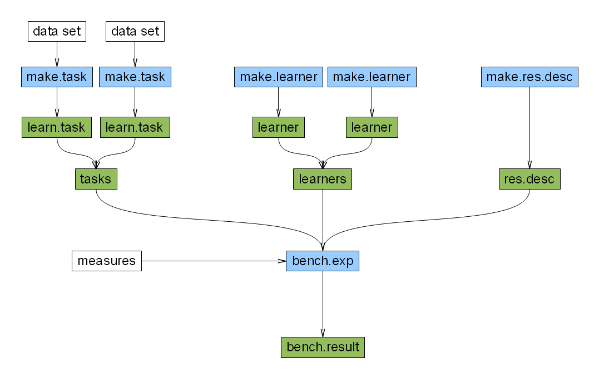

Benchmark Experiments¶
In order to get an unbiased estimate of the performance on new data, it is generally not enough to simply use repeated cross-validations for a given set of hyperparameters and methods (see tuning), as this might produce an overly optimistic result.
A better (although more time-consuming) approach is nesting two resampling methods. To make the explanation easier, let’s take cross-validations, in this case also called “double cross-validation”. In the so called “outer” cross-validation the data is split repeatedly into a (larger) training set and a (smaller) test set in the usual way. Now, in every outer iteration the learner is tuned on the training set by performing an “inner” cross-validation. The best found hyperparameters are selected, with these the learner is fitted to the complete “outer” training set and the resulting model is used to access the (outer) test set. This results in much more reliable estimates of true performance distribution of the learner for unseen data. These can now be used to estimate locations (e.g. of the mean or median performance value) and to compare learning methods in a fair way.
In the following we will see four examples to show different benchmark settings:
# One data set + two classification algorithms</li> # One data set + one classification algorithm + tuning # Three data sets + three classification algorithms + tuning # One data set + two classification algorithms + variable selection
In general, benchmark experiments are constructed as the following graphic shows:

Example 1: One task, two learners, no tuning¶
> library("mlr")
> ct <- make.task(data = iris, target = "Species")
> learners <- c("classif.lda", "classif.qda")
> res <- make.res.desc("cv", iters = 5)
> result <- bench.exp(learners, ct, res)
The above code should be mainly self-explanatory. In the result every column corresponds to one learner. The entries show the mean test error and its standard deviation for the final fitted model.</P>
But the Benchmark result contains much more information, which you can access if you want to see details. Let’s have a look to the benchmark result from the example above:
> result["perf"]
> result["conf.mats"]
Example 2: One task, one learner, tuning¶
Now we have a learner with hyperparameters and we want to find out, which are the best ones. In that case we have two resampling levels.
We show an example with outer bootstrap and inner cross-validation, our learner will be k-nearest-neighbor. .. code-block:: r
> ct <- make.task(data = iris, target = “Species”) > r <- list(k = 1:5) > inner.res <- make.res.desc(“cv”, iters = 3) > knn.tuner <- make.tune.wrapper(“classif.kknn”, resampling = inner.res, + control = grid.control(ranges = r)) > res <- make.res.desc(“bs”, iters = 5) > result <- bench.exp(knn.tuner, ct, res, measure = “acc”) > result[“perf”] > result[“tuned.par”] > result[“conf.mats”]
Of course everything works the same way if we exchange the resampling strategy either in the outer or inner run. They can be freely mixed.
Example 3: Three tasks, three learners, tuning¶
Extensive example which shows a benchmark experiment with three data sets, three learner and tuning.
> library("dprep")
> library("mlbench")
> data(BreastCancer)
> data(Vehicle)
> ct1 <- make.task("Iris", data = iris, target = "Species")
> ct2 <- make.task("Vehicle", data = Vehicle, target = "Class")
> ct3 <- make.task("BreastCancer", data = na.omit(BreastCancer),
+ target = "Class", excluded = "Id")
> tasks = list(ct1, ct2, ct3)
> r <- list(C = 2^seq(-1, 1), sigma = 2^seq(-1, 1))
> inner.res <- make.res.desc("cv", iters = 3)
> svm.tuner <- make.tune.wrapper("classif.ksvm", method = "grid",
+ resampling = inner.res, control = grid.control(ranges = r))
> learners <- c("classif.lda", "classif.rpart", svm.tuner)
> res <- make.res.desc("cv", iters = 5)
> result <- bench.exp(learners, tasks, res)
> result["perf", task = "Iris"]
> result["perf", learner = "classif.lda"]
> result["tuned.par", learner = "classif.ksvm"]
> result["conf.mats", learner = "classif.rpart", task = "BreastCancer"]
> result["opt.perf", learner = "classif.ksvm"]
Example 4: One task, two learners, variable selection¶
Let’s see how we can do variable selection in an benchmark experiment:
> ct <- make.task("iris", data = iris, target = "Species")
> ctrl <- seq.control(beta = 100, method = "sfs")
> inner <- make.res.desc("cv", iter = 2)
> vs <- make.varsel.wrapper("classif.lda", resampling = inner,
+ control = ctrl)
> learners <- c("classif.rpart", vs)
> res <- make.res.desc("subsample", iter = 3)
> be <- bench.exp(tasks = ct, learners = learners, resampling = res)
> be["sel.var", learner = "classif.lda"]